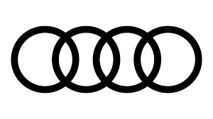

Car Shop
Ford
Ford history: The Ford Motor Company was founded in Detroit in 1903 by Henry Ford and 11 investors. Revolutionizing global manufacturing, the company introduced the moving assembly line in 1913, mass-producing the iconic Model T and transforming the automobile from a luxury item into accessible, everyday transportation
Ford Mustang: A legendary sports car known for its aggressive styling and high-performance engines. The modern lineup includes everything from the classic V8 GT to the track-ready Dark Horse.
Ford Focus: A globally renowned compact car known for its agile handling and fuel efficiency. It has long served as a practical daily driver, available in both sleek hatchback and sedan body styles.

BMW
BMW (Bayerische Motoren Werke) was founded in Germany in 1916 originally as an aircraft engine manufacturer. After World War I, the Treaty of Versailles banned aircraft production, forcing the company to pivot to motorcycles, and later, to automobiles. Today, it is a premier global luxury automaker headquartered in Munich.
The BMW 2 Series is the brand's entry-level, performance-focused line.
- Body Styles: Available as a classic two-door coupe or a four-door Gran Coupe.
- Performance: Features engine options ranging from an agile turbocharged 4-cylinder to the full-fat, high-performance BMW M2.
- Who it's for: Drivers looking for an engaging, nimble, and highly maneuverable car that excels in urban settings.
The BMW 3 Series is widely considered the benchmark for premium compact luxury sedans.
- Body Styles: Primarily offered as a sport sedan, but also widely available in wagon form (Touring) in many markets.
- Performance: Balances a highly comfortable daily ride with dynamic, rear-wheel or all-wheel-drive handling. It ranges from the efficient 330i to the track-ready M3 variants.
- Who it's for: Those needing a perfect balance of track-inspired performance, comfortable passenger space, and everyday practicality.

Audi
Audi’s history began in 1909 when engineer August Horch founded his second car company in Zwickau, Germany. Since he could not use his own last name (which was tied to his previous company), he translated "Horch" (German for "listen") into Latin—creating the name Audi.
Audi Quattro
- Era: 1980–1991
- Significance: The Quattro changed the motorsport world by introducing permanent all-wheel drive to rally racing. Its dominant performance in the legendary Group B era forced competitors to rethink their vehicle designs. It introduced the brand's now-iconic "quattro" all-wheel drive technology to consumer production cars.
- Legacy: The street-legal variants, especially the limited, short-wheelbase Sport Quattro, remain highly sought-after collector cars.
Audi R8
- Era: 2006–2024
- Significance: The R8 transformed Audi from a premium luxury brand into a supercar powerhouse. Sharing DNA with Lamborghini, it famously featured a naturally aspirated V8 and a roaring 5.2-litre V10 engine.
- Legacy: Known for its daily drivability blended with striking mid-engine performance, it is considered one of the most usable and iconic supercars of the modern automotive era.